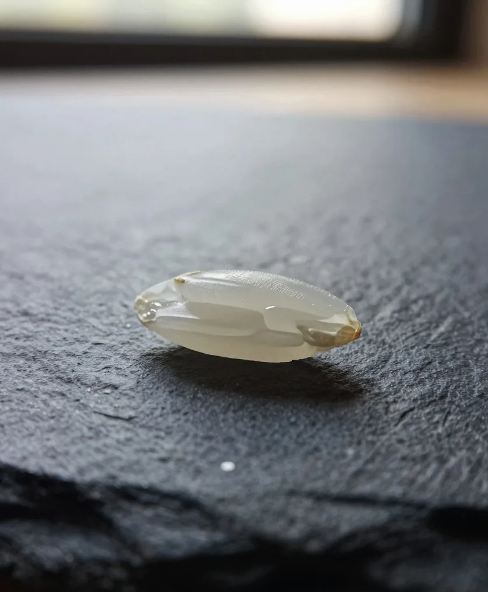
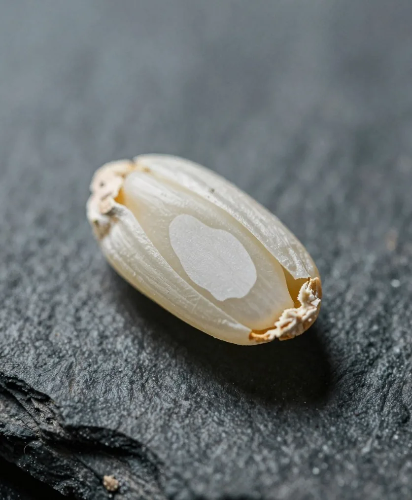
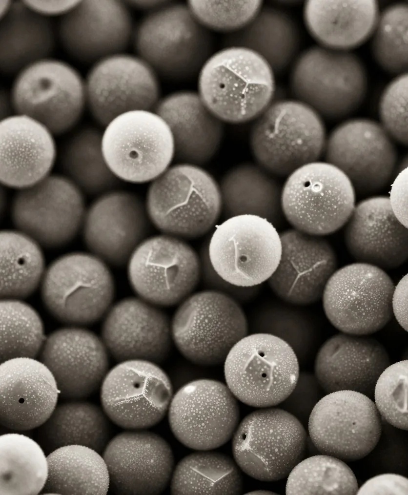
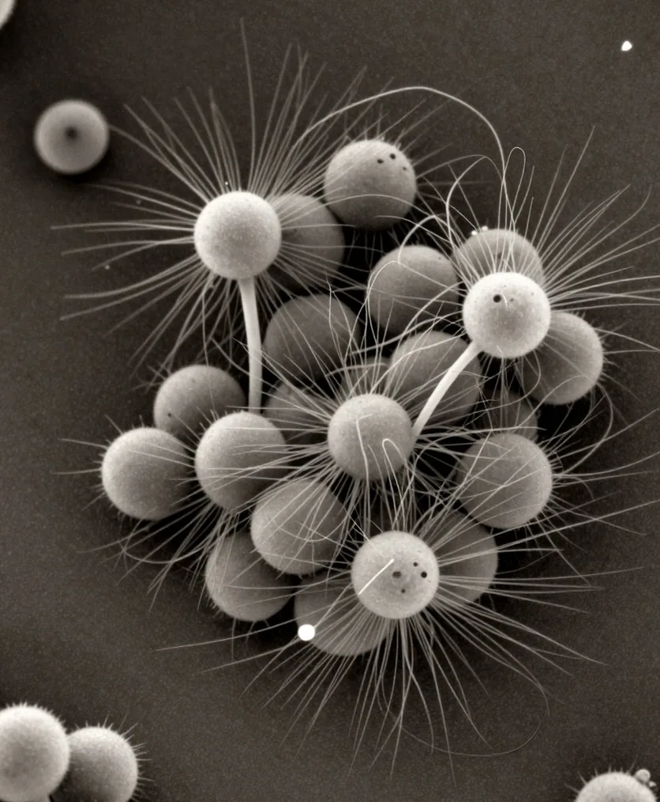

瀬音酒造 仕込み帖
米が酒になるまで、
およそ四十八日。
およそ四十八日。
蔵では、
いま、蔵では
蔵の
蔵の一日をぜんぶ見る
- 夜の
番 麹室と酛の タンクを、 交代で 見回ります。 温度が 上がりすぎていないか、 手で 確かめます。 - 蒸しの
支度 釜に火を 入れて、 湯を わかします。 - 朝の
測り 醪と酛の タンクの 温度を 測って、 帳面に 書きます。 - 蒸し甑
（こしき）で 米を 蒸します。 湯気で、 蔵の 中が 白くなります。 - 朝ごはん蔵の
みんなで 食べます。 - 麹室と
酛の 蒸した手入れ 米を 冷まして 麹室へ 運びます。 酛の タンクを かき混ぜます。 - 洗米・浸漬明日の
米を 洗って、 ストップウォッチで 測りながら水に 浸けます。 - 昼ごはん午後の
仕事の 前に、 ゆっくり休みます。 - タンクの
作業 仕込みの日は 米・麹・水を 足します。 搾りの 日は、 醪の 袋を 積みます。 - 道具の
掃除 桶・布・ホースを洗って、 乾かします。 蔵は いつも 清潔に。 - 夕方の
測り もう一度、 すべての タンクの 温度を 測って、 帳面に 書きます。 - 夕ごはん一日の
仕事を、 みんなで 振り返ります。 - 帳面と
段取り 今日の記録を まとめて、 明日の 作業を 決めます。 - 夜の
番 交代で見回りの 番に 入ります。
あなたの
いま何日目で、
1日目洗米・浸漬
米を
- 水の
温度 - 約8℃
- 吸わせる
時間 - 数分〜
（秒単位で 調整）
2日目蒸し
甑
- 蒸す時間
- 約60分
- 冷ました
あと - 約30℃
3〜4日目麹
蒸した
- 育てる
時間 - 約48時間
- 温度
- 30〜40℃
米1粒から、麹菌まで
麹が
拡大 1 / 4




- 約5mm米1粒
- 約1mm心白
- 約0.005mmでんぷんの
粒 - 約0.003mm麹菌の
糸
5〜18日目酛（酒母）
酵母を
- かかる
日数 - 約14日
- 温度
- 8〜15℃
19〜22日目三段仕込み
酒母に、
- かかる
日数 - 4日間
（3回に 分ける） - 温度
- 8〜10℃
23〜42日目醪（発酵）
醪
- かかる
日数 - 約20日
- 温度
- 8〜13℃
（低めを 保つ）
43〜45日目搾り
醪を
- かかる
日数 - 約3日
- 蔵の
温度 - 約5℃
搾りを、手で体験する
袋を、
0 滴 約 0 ml / 小さな
一升瓶
46〜48日目火入れ・瓶詰め
酒を
- 火入れ
- 約65℃
（短い 時間） - 全体
- 約48日